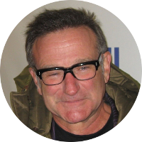
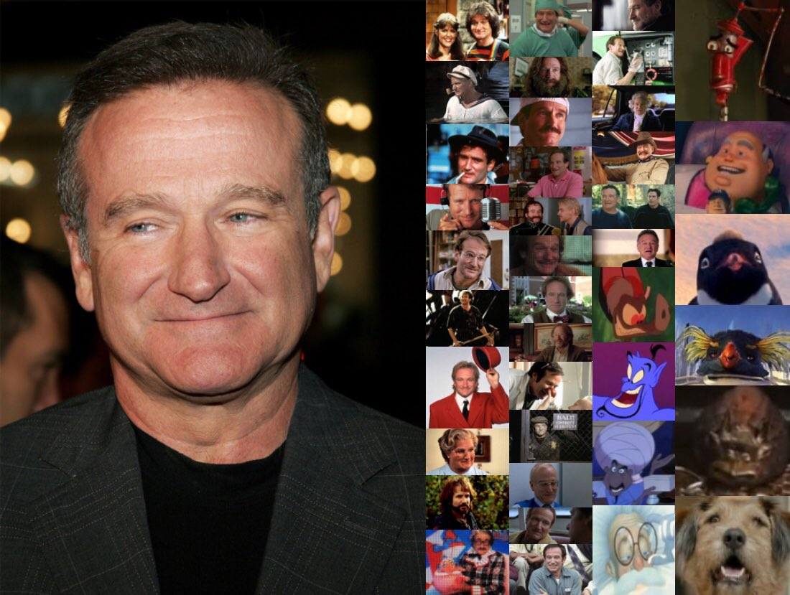
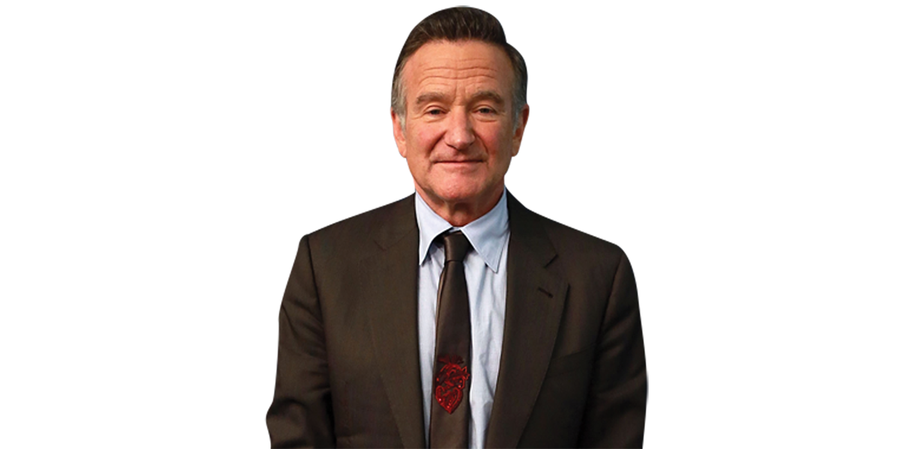

On The Fragile Meaning Of Life
Robin McLaurin Williams was a kind man with a tragic ending, letting others know that no matter how happy people are, everyone goes through struggles that no one else notices. The actor has taught many valuable lessons, he is one of the greatest actors/voice actors of all time. An American actor and comedian. Known for his improvisational skills and the wide variety of characters he created on the spur of the moment and portrayed on film, in dramas and comedies alike, he is regarded as one of the greatest comedians of all time. In 1978, ABC caught wind of Robin Williams' act and were so impressed that they fast-tracked a new sitcom in which he'd play an alien. Though critics were initially skeptical about the premise, “Mork & Mindy” was a phenomenal hit and launched Robin Williams' incredibly successful career.
While Robin Williams didn't have a massive career in voice acting, the characters he inhabited will forever echo in animation. In the same year the actor voiced the mischievous Genie, Williams also transformed into Batty Koda in "Ferngully: The Last Rainforest" (via IMDb). Not only was he the ultimate sidekick to Samantha Mathis' Crysta the fairy, but performed the "Batty Rap" that was in every '90s kids head for a while (via YouTube).
August 11, 2014, was a dark day for many when the world lost the light that was Robin Williams. Known for his chaotic energy and caring soul, Williams played countless roles that were beloved by audiences. While not often commented on during his life, Williams was an avid supporter of charitable causes, donating and serving over 50 charities and causes at the time of his death. His money may have been spread among dozens of locations and causes, but his time spent in these memorable charities really spoke to his caring and considerate soul. One of Robin Williams' most public supports went to the St. Jude Children's Research Hospital. Williams proudly volunteered time, money, and service to support the children's hospital, even appearing in commercials and announcements for the organization in 2004.
Robin Williams may have come across as public and extroverted, however, the comedian kept a lot of things close to his chest. One such secret took place between 2004 and 2008 when the actor raised close to $50, 000 for a Seattle food bank without saying a word. Rather than flaunt his donations and assistance to the food bank, Williams went on to donate proceeds from his 2007 and 2008 shows directly to the organization to do his part to help those in need.
Robin Williams kind spirit extends beyond existing charities. Wanting to do more than just provide personal donations, Williams and his second wife, Marsha Williams, came together to found the Windfall Foundation. The organization exists to serve other causes, extending finances and finding grants for a variety of causes. Raising funding for Doctors Without Borders, Make-A-Wish Foundation, Pediatric Aids Association, Project Open Hand, and many more, the Windfall Foundation serves to support charitable causes in need.
